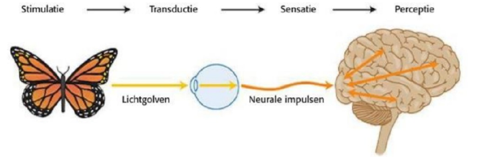

Sensatie en de zintuigen
Perceptie in de psychologie verwijst naar het proces waarin betekenis wordt toegekend aan zintuiglijke waarnemingen. Dit betekenisverleningsproces steunt op aanwijzingen van stimuli en omvat zowel Bottom-up als Top-down verwerkingen in de hersenen. De complexiteit van hoe onze hersenen de output van diverse zintuigen tot één enkele perceptie samenvoegen wordt vaak het "binding probleem" genoemd.
Top-down verwerking:
Bij top-down verwerking gebruiken onze hersenen bestaande kennis om te interpreteren wat via onze zintuigen binnenkomt. Dit gebeurt wanneer we al enige voorkennis hebben en deze voorkennis toepassen om onze perceptie te vormen.
Bottom-up verwerking:
In het geval van bottom-up verwerking, organiseren onze hersenen alle informatie die via onze zintuigen binnenkomt, geven het betekenis en slaan het op. Dit proces wordt gebruikt wanneer we iets nieuws leren of wanneer we ervoor willen zorgen dat we de feiten correct begrijpen.
Perceptuele beoordeling vindt plaats via kenmerkdetectoren, bottom-up (stimulusgestuurde verwerking) en top-down (conceptueel gestuurde verwerking).
Bij de gestalttheorie ligt de nadruk op aangeboren waarnemingspatronen (gestalten), zoals:
- Figuur en (achter)grond.
- Subjectieve contouren en sluiting (incomplete beelden maken we compleet).
- Gelijkenis.
- Dichtbijheid.
- Continuering.
- Minimumprincipe van perceptie (wet van Pragnanz).
Perceptuele blindheid: Perceptuele blindheid en veranderingsblindheid tonen aan dat we sommige gebeurtenissen niet opmerken die vlak voor onze neus plaatsvinden, vooral als ze onverwachts optreden en we onze aandacht er niet op hebben gericht.
Veranderingsblindheid: Is het onvermogen om subtiele veranderingen in de omgeving op te merken, zelfs als ze duidelijk zichtbaar zijn, wanneer de aandacht elders ligt.
De theorie van concluderen door te leren suggereert dat ervaring een invloed uitoefent op onze perceptie, met factoren zoals context, perceptuele predispositie en culturele achtergrond als bepalende elementen. Ondanks de kennis die we hebben over zintuiglijke waarneming, nemen veel individuen de informatie die hun zintuigen verschaffen kritiekloos aan. Dit creëert een omgeving waarin illusionisten, politici en marketeers in staat zijn om onze perceptie te beïnvloeden en uiteindelijk ons gedrag te manipuleren.
Rol van leerprocessen (Helmholtz):
Flash Cards